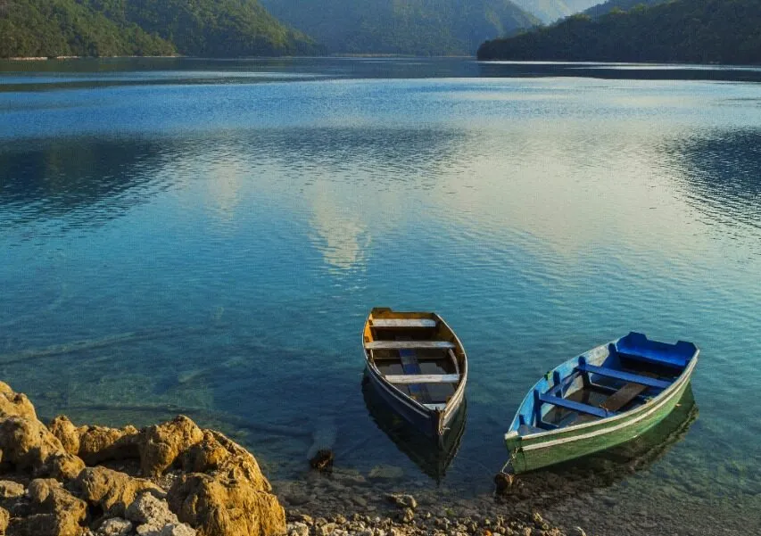

Descripción
Nentón es un municipio ubicado en el departamento de Huehuetenango, Guatemala. Es conocido por su rica cultura indígena y su impresionante belleza natural.
El área está habitada principalmente por comunidades de origen mam, que conservan sus tradiciones y costumbres. Los visitantes pueden explorar los coloridos mercados locales, donde se venden artesanías, textiles y productos agrícolas.
Nentón también ofrece oportunidades para el ecoturismo, con senderos que conducen a paisajes montañosos y vistas panorámicas. Es un destino ideal para quienes buscan una experiencia auténtica en Guatemala.
Ubicación
Nentón se encuentra en el departamento de Huehuetenango, cerca de la frontera con México.
Actividades Recomendadas
- Explorar los mercados locales
- Visitar comunidades indígenas
- Realizar senderismo en los alrededores
- Disfrutar de la gastronomía local
- Participar en festividades culturales